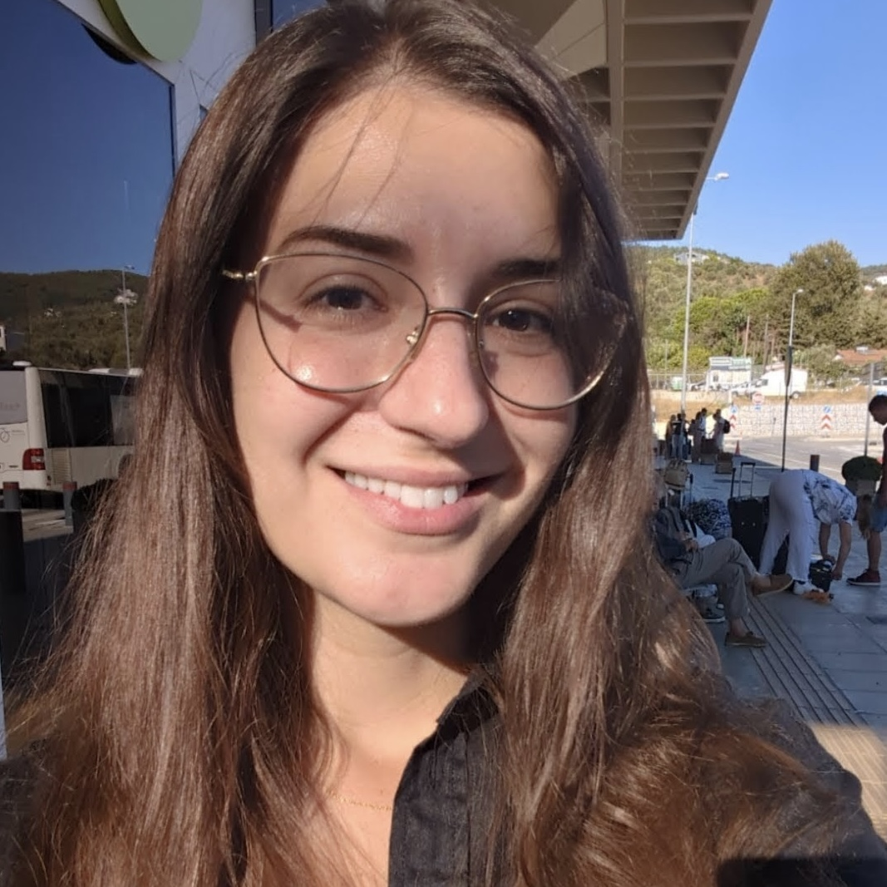

People
Building MOSAIC.
A new research group bringing together structural variation, population genetics, and genome evolution.

Founding group leader
Charikleia (Clio)
Karageorgiou
Incoming tenure-track Assistant Professor · December 2026
Clio is an evolutionary geneticist interested in the mechanisms that generate structural variation and how recurrent genomic rearrangements shape evolution.
She completed her PhD at the Universitat Autònoma de Barcelona in 2022, studying chromosomal inversion polymorphisms in Drosophila subobscura. Her postdoctoral work with Omer Gokcumen at the University at Buffalo has focused on structurally complex regions of human and primate genomes, particularly the amylase locus.
She will join BiRC in the Department of Molecular Biology and Genetics at Aarhus University on December 1, 2026. She also serves as an Associate Editor for Heredity.
Help shape the group.
We welcome enquiries from researchers interested in structural variation and evolutionary genetics. Information about future opportunities will appear on the Join us page.
Joining MOSAIC